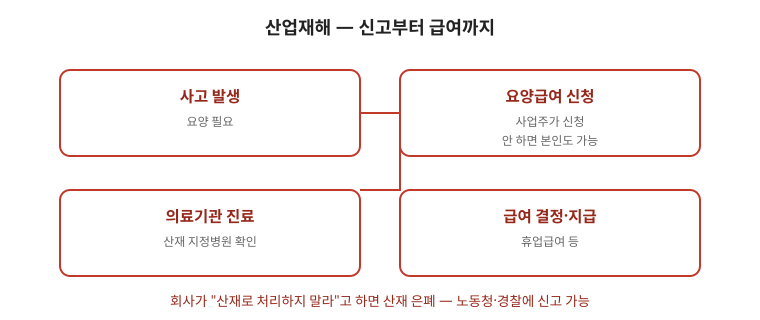

산업재해는 다친 사실 자체보다 “업무와의 관련성”을 어떻게 남기느냐가 인정 여부를 가릅니다. 현장에서 즉시 기록을 만드는 것이 가장 중요합니다. 이 글은 인정 요건부터 현장 조치·신청·급여·불복까지 순서대로 정리한 안내입니다. 서류와 기간은 사안마다 다르므로 마지막 점검표까지 읽고 근로복지공단·전문가와 확인하세요.

한눈에 보는 표
| 단계 | 할 일 | 남길 기록 |
|---|---|---|
| 현장 | 경위 기록 + 목격자 확보 + 진료 | 시간순 경위서·진단서·사진 |
| 신청 | 근로복지공단에 요양급여 신청 (본인 직접 가능) | 신청서·의무기록·작업자료 |
| 급여 | 요양·휴업·장해·유족 순으로 검토 | 결정서·지급 내역 |
| 불복 | 불승인 시 기한 내 이의·심사청구 | 통지서 수령일 메모 |
1. 무엇이 업무상 재해인가
- 업무상 사고와 업무상 질병으로 나뉩니다. 작업 중 사고뿐 아니라 통근 중 사고, 반복 작업·유해물질 노출로 생긴 질병도 검토 대상입니다. 관련 글 직업성 질병 글·산재급여 글을 함께 보세요.
- 업무와 재해 사이의 상당인과관계가 핵심입니다. 사업장이 “개인 질병”이라 주장하더라도 작업 환경·시간·강도가 근거가 되면 다퉈볼 수 있습니다.
2. 현장에서 즉시 할 일 — 첫 24시간
- 재해 발생 경위를 시간순으로 적어 두세요. 목격자 이름과 연락처를 남기세요. 사진(현장·설비·보호구 상태)이 있으면 함께 보관하세요.
- 병원 진료를 받고 진단서·소견서를 보관하세요. 초기 진단 내용이 이후 판단의 기준이 됩니다. 통증을 참지 말고 증상을 그대로 말하세요.
- 사업주가 산재 신청을 미루거나 회유하는 경우가 있습니다. 신청은 근로자가 직접 할 수 있고, 사업주 동의가 필수는 아닙니다. 관련 글 산재은폐 대응 글을 참고하세요.
3. 신청과 급여
- 요양급여 신청은 근로복지공단에 접수합니다. 승인되면 치료비 등이 급여로 처리됩니다. 신청서·진단서·경위서를 함께 내세요.
- 업무상 재해로 일정 기간 일하지 못하면 휴업급여, 치료 후 장해가 남으면 장해급여, 사망 시 유족급여를 검토하게 됩니다.
- 승인 전에 낸 진료비가 부담이 되는 경우가 많습니다. 신청 순서와 필요한 서류를 미리 확인하면 부담을 줄일 수 있습니다.
4. 결과가 나오지 않았을 때 — 불복 기한
- 불승인 처분을 받으면 심사청구·재심사청구 등 단계별 불복 절차가 있습니다. 기간 제한이 있으므로 통지서를 받은 날짜를 바로 확인하고 달력에 표시하세요.
- 노동조합·산재 상담 창구의 도움을 받아 의무기록·작업환경 자료를 정리하면 다툼에서 유리합니다.
자주 틀리는 3가지
- “회사 동의 없으면 신청 불가” — 본인이 직접 신청할 수 있습니다.
- “통근 사고는 산재 아님” — 통근 중 사고도 요건에 따라 검토 대상입니다.
- “불승인이면 끝” — 기한 내 불복 절차가 있습니다.
현장 체크리스트
- □ 경위를 시간순으로 적었는가
- □ 목격자 연락처를 확보했는가
- □ 진단서·소견서를 보관했는가
- □ 공단 신청 서류를 접수했는가
- □ 불승인 시 통지서 날짜를 표시했는가
자주 묻는 질문
- Q. 사장이 “공상 처리하자”고 합니다. — A. 공상은 법정 절차가 아닙니다. 산재 신청 권리를 먼저 확인하세요.
- Q. 병원비가 먼저 나갑니다. — A. 영수증을 모아 두세요. 승인 후 정산 구조를 공단에 확인하세요.
- Q. 예전부터 아픈 부위입니다. — A. 기존 질환이 있어도 업무로 악화됐으면 다툼 여지가 있습니다. 작업 강도 기록을 모으세요.
- Q. 목격자가 없습니다. — A. 진료 기록·작업 일지·CCTV·출입 기록 등 간접 자료를 모으세요.
근거와 원문
이 글은 2026-09-19 기준 일반 안내이며 법률·의학적 판단이 아닙니다. 신청 서류와 불복 기간은 사안마다 다르므로 근로복지공단·노무사·변호사와 확인하세요.